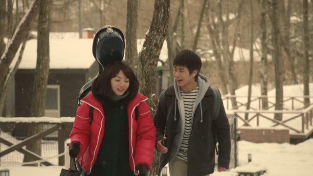
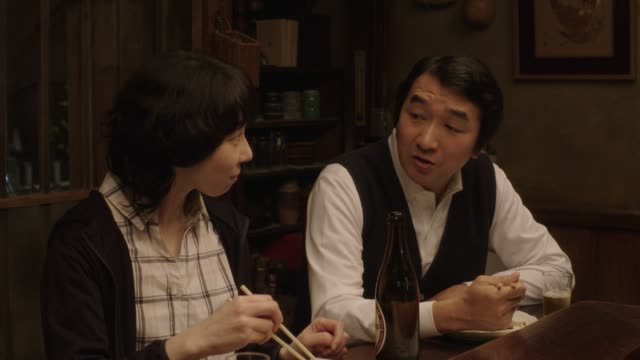
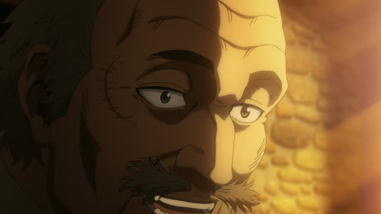
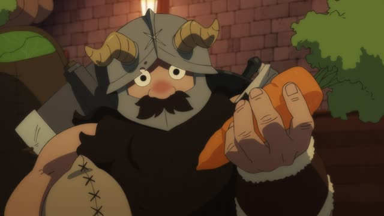
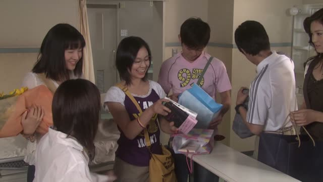
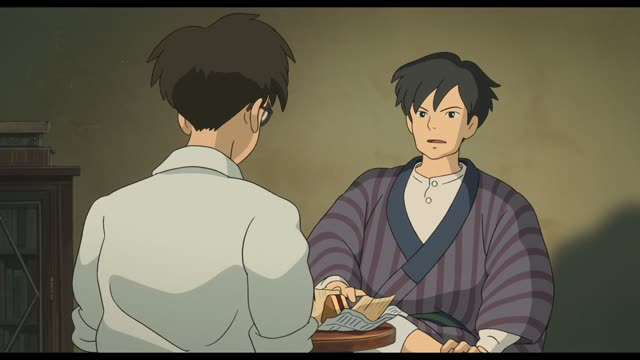
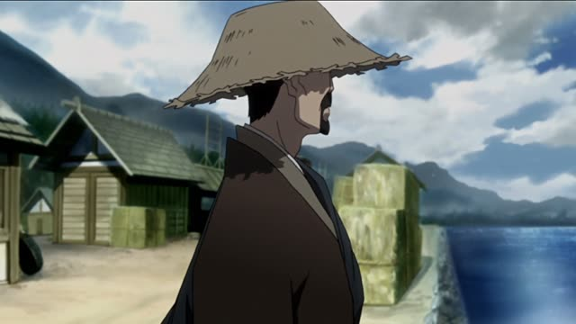
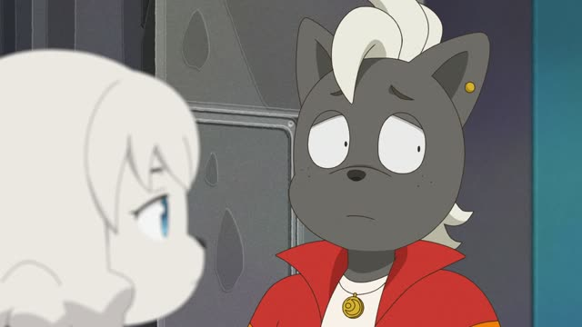
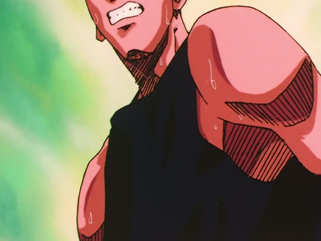

～たがる
| Polite | ～たがります・～たがっています |
|---|---|
| Casual | ～たがる・～たがってる |
Same meaning: "(someone else) wants to". Only the politeness changes.

Quartet · Episode 3
お父さんが会いたがってるんですって。
"They say your father wants to see you."
～たがる is ～たい for someone else: "he wants to". You can't see inside another person, so たい becomes たがる: 会いたい → 会いたがる.
On this card, Suzume hears her father wants to see her. 会いたがってる: he's showing he wants to. んですって makes it polite and passed-on.
Mostly in the ている form: 行きたがっている.

Midnight Diner: Tokyo Stories · Season 2, Episode 6
キミちゃん、前から上海行きたがってたし。
"Kimi's wanted to go to Shanghai for ages."
On this card, the regulars talk about Kimie's trip. 行きたがってた: she'd been saying she wanted to go.
Quick Examples
Your kid at the toy store.
息子がおもちゃを買いたがってる。
"My son wants to buy a toy."
CasualTalking about a coworker.
田中さんは日本に行きたがっています。
"Tanaka-san wants to go to Japan."
PoliteYour cat at the door.
猫が外に出たがってるよ。
"The cat wants to go out."
CasualYour friend is shy.
彼は写真を撮られたがりません。
"He doesn't like having his photo taken."
PoliteWith and without
私は行きたい。
"I want to go." Me.
弟が行きたがっている。
"My brother wants to go." Someone else.
Examples from Media

Vinland Saga · Episode 23
トールズも行きたがっていたと
"Thors wanted to go there too"

Dungeon Meshi · Episode 4
きっと料理したがる。
"I bet he'll want to cook it."

1 Litre of Tears · Episode 4
これ、読みたがってた本。
"Here's the book you wanted to read."

The Wind Rises
貧乏な国が飛行機を持ちたがる。
"A poor country wants to have airplanes."

Samurai Champloo · Episode 24
幕府がその存在を最も消したがっている男だ。
"He's the man the shogunate most wants gone."

Odd Taxi · Episode 2
あれじゃあ誰もチェキ撮りたがらないよ。
"Like that, nobody'll want to take a photo with them."

Slam Dunk · Episode 85
野郎、どこまで目立ちたがり屋なんだ。
"How much of a show-off is that guy?"
目立ちたがり屋 = someone who always wants attention.